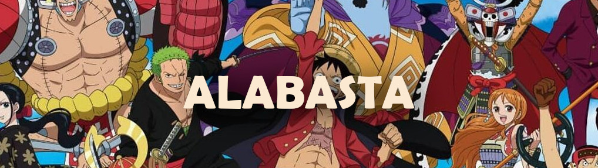
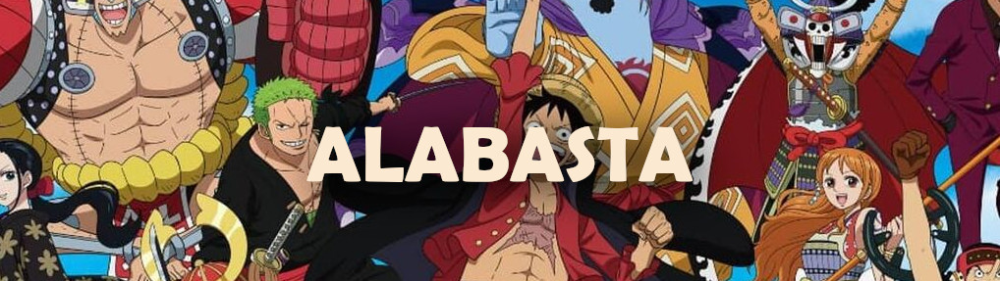

Na segunda saga, intitulada Alabasta (ou Baroque Works) Luffy e sua tripulação segue na busca pelo One Piece, na tentativa do rapaz se tornar o Rei dos Piratas. Entretanto, eles precisam ajudar a Nefertari Vivi à chegar na sua pátria antes que uma guerra se inicie. O problema é que uma organização mal intencionada vai fazer de tudo para impedir Luffy e seus amigos de chegar em Alabasta.